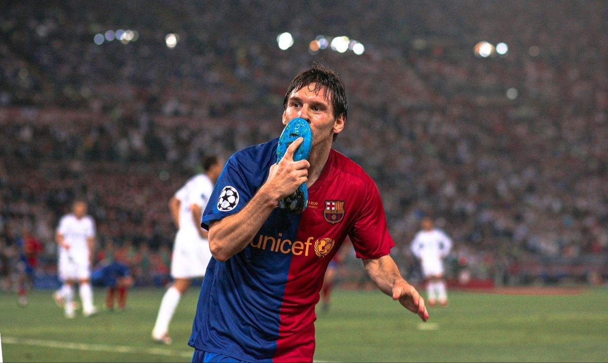
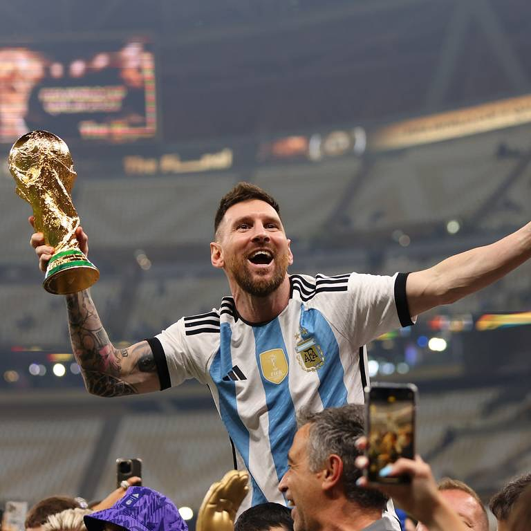
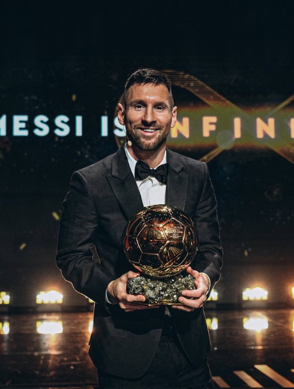
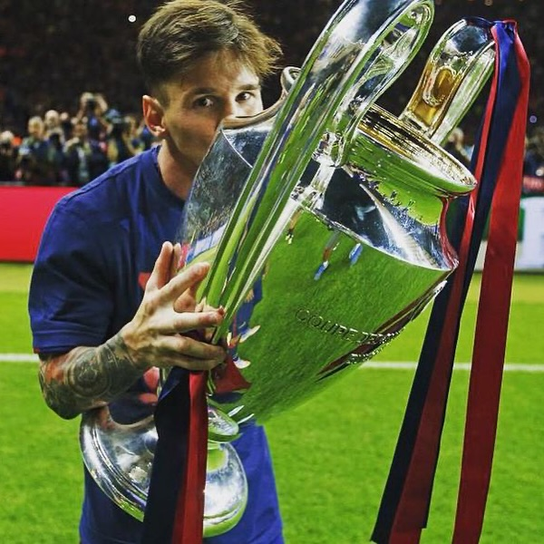

Lionel Messi: A class apart
About Lionel Messi
Lionel Messi is an Argentine professional footballer widely regarded as one of the greatest players in the history of the sport. Born on June 24, 1987, in Rosario, Argentina, he rose to global prominence during his legendary career at FC Barcelona, where he scored 672 goals in 778 matches and won numerous titles. After stints at Paris Saint-Germain and currently Inter Miami CF, Messi has continued to showcase his brilliance on the field.
Renowned for his exceptional dribbling, vision, and left-footed finesse, he has won a record 8 Ballon d’Or awards. His international career with Argentina reached its pinnacle when he led his country to victory in the FIFA World Cup 2022, cementing his legacy as a true football icon.
Lionel Messi's best seasons
Lionel Messi has had some of his best seasons in the following years:
- 2010-2011
- 2011-2012
- 2014-2015
His best moments
Lionel Messi has had some of his best moments captured in pictures. Here are the top 3:
-
Winning the Fifa World Cup Final against France in December 2022
 -
Winning his 8th Ballon D'or, the most in the history of football
 -
Lifting the 4th UEFA Champions League Trophy of his career

Lionel Messi has had a remarkable career, and his impact on football is undeniable. His skills, dedication, and passion for the game have earned him the admiration of fans and peers alike. This doesn't cover all of his achievements, but you can learn more about Lionel Messi in your free time!